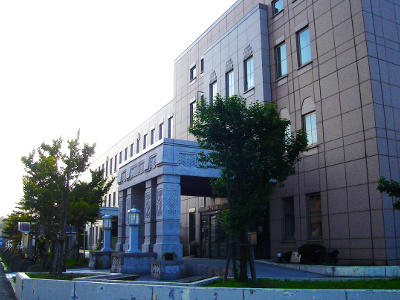
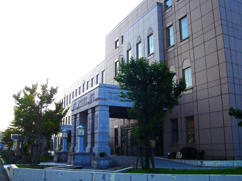

青森市公会堂跡
-太宰治が芥川龍之介の講演を聴いて・・-
写真をクリックすると拡大表示します。 

{kind=link}
1927年5月、旧制・弘前高校1年生の太宰治が、芥川龍之介の講演を聴いた場所です。
しかし、その講演から2カ月後の7月、芥川龍之介は自殺。
「これを契機に、女師匠に義太夫を習う一方、泉鏡花作品などの影響もあって、 浜町の花柳界に出入りするようになった」（松村慎三「北国のまち・・ふるさとの風」北の会編『新編 太宰治と青森のまち』）。
強い衝撃を受けたことがうかがわれます。
当時の青森市公会堂は1925年竣工、鉄筋コンクリート3階建ての洋風建築でした（写真左 提供：青森まちかど歴史の庵 奏海）。
ヘレン・ケラーも講演、「快い潮・磯の香りがしますね」と語ったといいます。
1945年7月、アメリカ軍機による空襲。 しかし、公会堂は焼け残り、同9月～1952年7月、進駐軍が指令本部として使用。 サンフランシスコ講和条約による独立後は、再び青森市の施設になりました。
1996年、道路拡幅工事のため、保存を求める声はあったものの、取り壊されました。
現在は青森市福祉増進センター（しあわせプラザ）となっていますが（写真右）、
正面外観には、太宰が芥川の講演を聴いた当時の建物のデザインが採用されています。
散歩してはいかかでしょうか？このスポットは次の散歩コースに組み込まれてます。しかし、その講演から2カ月後の7月、芥川龍之介は自殺。
「これを契機に、女師匠に義太夫を習う一方、泉鏡花作品などの影響もあって、 浜町の花柳界に出入りするようになった」（松村慎三「北国のまち・・ふるさとの風」北の会編『新編 太宰治と青森のまち』）。
強い衝撃を受けたことがうかがわれます。
当時の青森市公会堂は1925年竣工、鉄筋コンクリート3階建ての洋風建築でした（写真左 提供：青森まちかど歴史の庵 奏海）。
ヘレン・ケラーも講演、「快い潮・磯の香りがしますね」と語ったといいます。
1945年7月、アメリカ軍機による空襲。 しかし、公会堂は焼け残り、同9月～1952年7月、進駐軍が指令本部として使用。 サンフランシスコ講和条約による独立後は、再び青森市の施設になりました。
1996年、道路拡幅工事のため、保存を求める声はあったものの、取り壊されました。
現在は青森市福祉増進センター（しあわせプラザ）となっていますが（写真右）、
正面外観には、太宰が芥川の講演を聴いた当時の建物のデザインが採用されています。